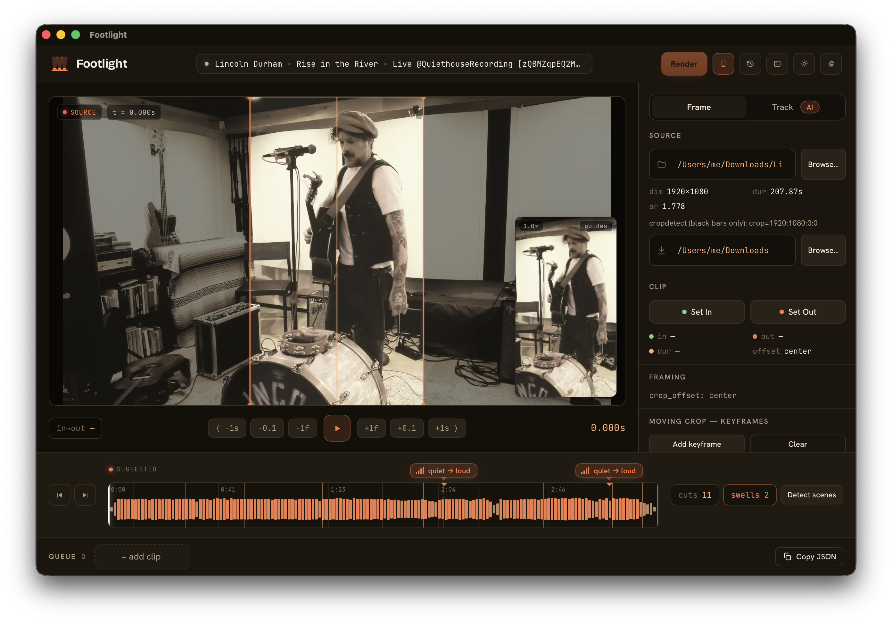

Footlight turns 16:9 music and live-performance footage into clean 1080×1920 (9:16) H.264 clips for Reels, TikTok and Shorts. It automates the mechanical part — cut → crop → scale → encode — after a human decides the moment and the framing. No transcript guessing. No auto-magic.

Transcript-based auto-clippers read speech to decide what to clip — so they're built for talking heads and fall apart on instrumental and live-performance footage where there's no transcript to key off. Footlight serves that underserved case: music and live performance, where the editor already knows the moment and the subject moves across the frame.
Everything is built around the way you actually clip a song — by ear and by eye.
Drag across it to set In / Out, click to seek, hover to preview frames. It draws volume over time and flags suggested quiet→loud swells — the drops and builds you actually want to clip — plus scene-cut ticks and ⏮ / ⏭ cut-jumps from auto scene detection.
Drag the orange box to reposition; drag a corner to punch in and zoom. A live 9:16 output preview — with optional social safe-area guides — shows the real vertical result as you frame.
Drop keyframes for a time-keyed schedule that hard-switches the crop at cuts — align switches to the source's own scene-cuts and the change is invisible.
Bring your own key: AI subject tracking builds a smooth eased crop path across a shot — a reviewable suggestion you edit before rendering. Provider-agnostic, Gemini as reference. Opt-in, never a gate.
Add clips to a queue — reorder, duplicate, click to re-edit — pick a destination, and render. Past renders are saved to History for one-click re-framing; your session autosaves.
Space, ← / →, I / O, [ / ], S and more. Press ? for the shortcuts overlay. Lossless audio passthrough keeps the source as the quality ceiling.
Browse, drag a video onto the window, or paste a path. Scenes are auto-detected on load.
Drag across the loudness timeline to set In / Out. Let the swell markers point you to the moment.
Move the 9:16 box, punch in on a corner, double-click to reset. Watch the live vertical preview.
Add to the queue, choose a destination, render. Clean 1080×1920 H.264 lands in your folder.
The same render engine drives a scriptable command line. Describe clips in a CSV or JSON manifest — one row per clip — and batch the whole queue. Inspect a source or list scene-cuts to seed a crop schedule.
renderbatch every clip in a manifestprobedimensions + a cropdetect suggestionscenesdetected cut timestampsThere's no signed download — Footlight is open and you run it yourself. The browser GUI needs only Node; the native window adds the Rust toolchain. make doctor checks your setup in one shot.